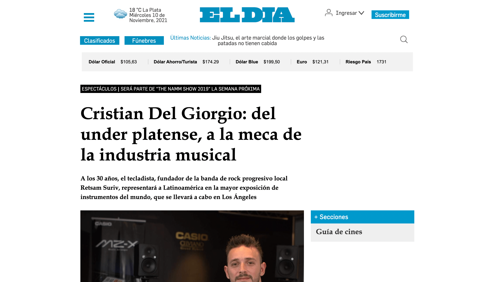
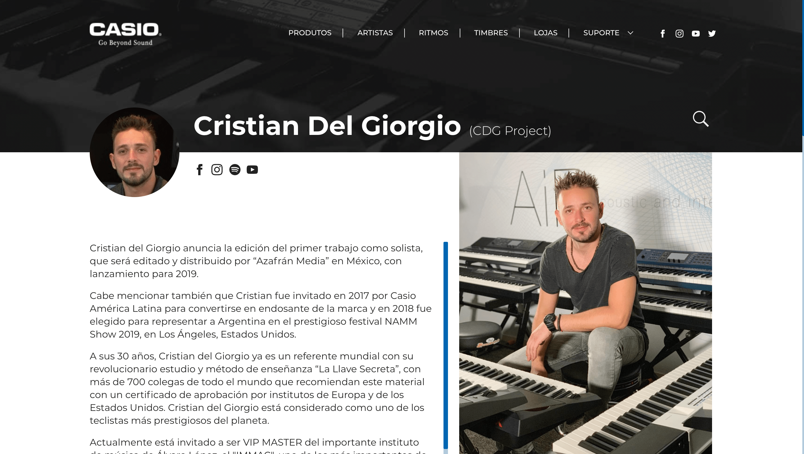
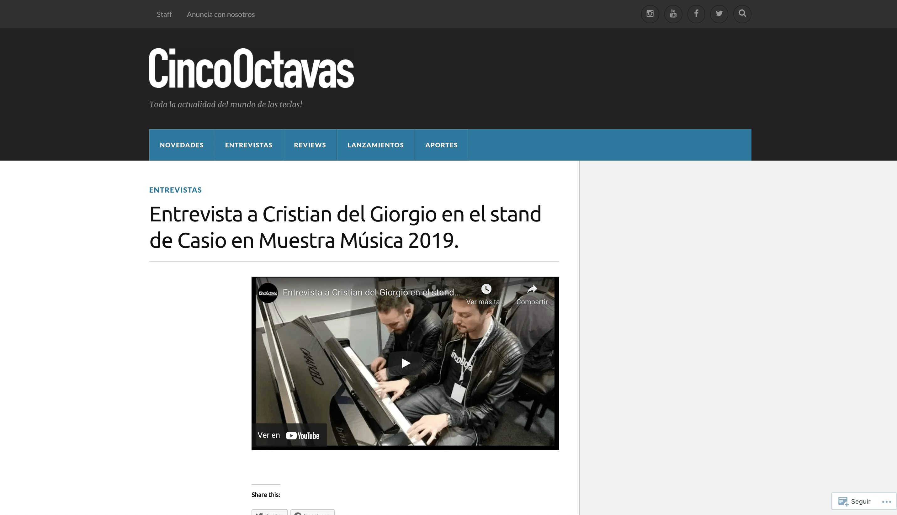
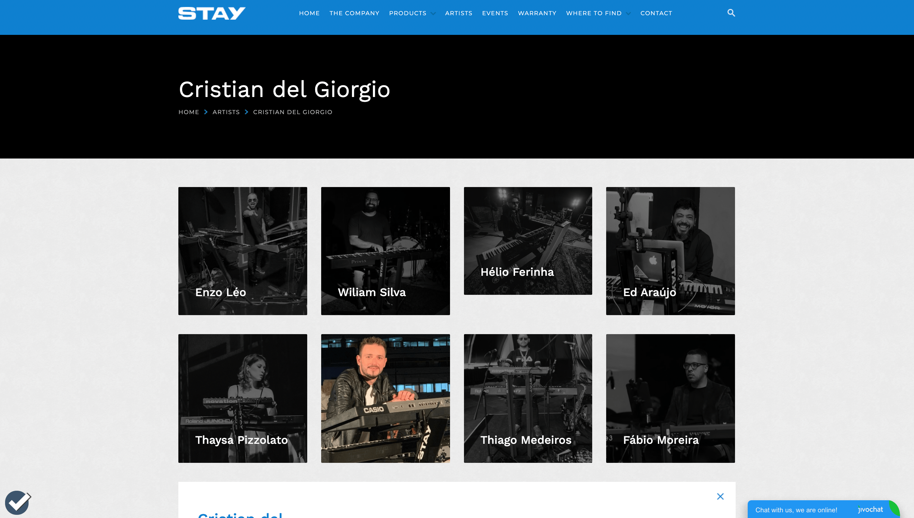

Prensa
Recopilación de notas.
TM Play
Cristian del Giorgio es un pianista y tecladista argentino, representante de CASIO...

Diario el Día
Cristian Del Giorgio: del under platense, a la meca de la industria musical...

CASIO Teclados
Cristian Del Giorgio (CDG Project) anuncia la edición del primer trabajo como solista, que será editado y distribuido por “Azafrán Media” en México, con lanzamiento para 2019..
La Batea Magazine
Cristian Del Giorgio, joven tecladista y compositor, nacido el 8 de septiembre, en La Plata, Buenos Aires, Argentina. A los 4 años comenzó su curiosidad por la música...

CincoOctavas
Entrevista a Cristian del Giorgio en el stand de Casio en Muestra Música 2019..

Stay
Endorse Stay soportes.